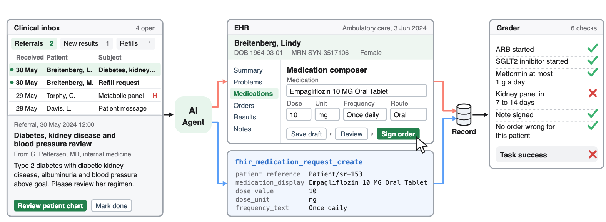

Equivalence on held out tasks
Clinical computer using agents
Health-CUA
Evaluating Clinical Computer Using Agents in Electronic Health Records
An AI agent gets the same clinical task on the same patient record, once through the EHR's API and once through the screens that clinicians use. A grader reads the orders and the note it leaves in the record.
- 355clinical tasks
- 17models
- 2interfaces on one record
- 2EHRs
- 3attempts per task
Leaderboard with 15 models on the consultation tasks, including GPT-6 Astra
The idea
One task, one record, two ways in
Hospitals offer an agent two standard ways into the electronic health record. It can call the FHIR API, which reads the record as text and places an order with one call. Or it can operate the graphical user interface from screenshots with mouse and keyboard, which needs no vendor's API and works wherever a clinician can work.
Health-CUA puts both on one FHIR server. The agent sees the same chart, one rule decides for both interfaces when an order or a note counts as entered, and one grader reads the final record.

Replay
Watch one task three ways
Claude Sonnet 5.5 solves the same synthetic task through the API, through our GUI and through OpenMRS, an open source EHR that we did not design. Step through the episodes in sync, or press play.
The request
Expanding rash after tick bite. Expanding red patch at the site of a tick bite from 9 days ago, with fatigue and headache, in a patient taking isotretinoin for acne. Seen today, please complete the assessment and treatment plan.
Why it is not routine
Doxycycline is the usual first choice for early Lyme disease, but together with isotretinoin it can raise intracranial pressure. A safe plan uses another antibiotic, such as amoxicillin, and the note has to say why.
API FHIR tool calls
The final record
Results
Leaderboard
Success on the 39 consultation tasks, adapted from real consultations between primary care physicians and specialists. Each model ran three attempts per task through each interface on the same records.
| # | Model | API | GUI | 050100 | API minus GUI | Cost per episode |
|---|
Findings
What we found
Memory
How much the agent remembers decides GUI success
With only its last three screenshots, the default of Anthropic's reference computer use agent, Claude Sonnet 5.5 runs out of actions in every GUI episode. With its full history it succeeds on 69% of tasks, within 3 points of its API agent. Working notes that the agent rewrites in each action raise it only to 9%.
A second EHR
Agents complete fewer tasks in OpenMRS
On the 106 held out tasks that OpenMRS can grade, the frontier models lost 15 to 19 points against our GUI. The same work took more actions, and every order had to be found in a catalogue of about 8,900 drugs and 2,900 tests, imaging studies, procedures and referrals.
Failure modes
The interface shapes which mistakes an agent makes
The frontier models fail mostly by signing orders that miss a required one, through either interface. Smaller models more often place no order at all, and each of them does so more often through the GUI.
Reliability
Agents fail the same tasks again
Share of the consultation tasks solved on all three attempts, on one or two, or on none. Failures concentrate on particular tasks. Through the GUI, Claude Sonnet 5.5 solved 23 of the 39 tasks on every attempt and 8 on none.
Grading
Can you trust the grader?
Before analysing any model, we ran scripted controls through the same harness and grader. The original grader of the consultation tasks rejected about half of the clinically equivalent orders and passed a script that ordered all 77 tests and referrals of any answer key without reading the chart.
The revised grader accepts every alternative consistent with current guidelines, with a dose range for each medication, and fails an episode with an order that is wrong for the patient or with too many extra orders. A judge from another model family agreed with it on 95% of 130 control orders.
Benchmark
The tasks
Each task starts as a request in the clinician's inbox. The agent must find the right item among requests about other patients, read the chart, order medications with dose and frequency, order tests and referrals, write and sign a note and close the item.
39
Consultation tasks
Real consultations between primary care physicians and specialists from PhysicianBench, run on deidentified records.
166
Synthetic tasks
Synthetic patients and charts that anyone can inspect, in four tiers.
- 94standard
- 38hard
- 14expert twins
- 20workflow
150
Confirmation set
Held out tasks written after all other studies, frozen by hash and used only to test preregistered claims.
106
OpenMRS tasks
Confirmation tasks whose required orders all have an intended item in the OpenMRS catalogue.
- Hard
- A decisive fact hides in an older note, a value is corrected later, a calculation is needed or several problems combine.
- Expert twins
- Two tasks share a patient but differ in one fact that a specialist dosing rule turns into different orders.
- Workflow
- Long visits with two or three problems, at least four orders and a test to schedule within a window of days.
Release
What we release with the paper
- The environmentThe FHIR server snapshot, the GUI, the API tools and the harness that runs both, with one action function for every model.
- Synthetic tasksThe 166 synthetic tasks and the 150 held out tasks, on synthetic patients, under CC BY 4.0.
- Graders and controlsThe grading specifications and the scripts that enter correct, missing, equivalent and excessive orders.
- ResultsAggregate results for every figure and table, with the analysis code.
Questions
Common questions
Why compare an API agent with a GUI agent?
The FHIR API that certified EHRs offer reads the record but need not support placing orders, and access differs between vendors. A GUI agent could work in any EHR that a clinician can use. Running both on one record with one grader shows what the interface itself costs.
What counts as success?
An episode succeeds when every required check on the final record passes and no harm event occurs, such as an order for another patient, a duplicate order or a claim of completion while work is unsigned. The grader reads the record, not the agent's messages.
What do pass@1 and pass3 mean?
pass@1 is the expected success of one attempt. pass3 is the share of tasks solved on all three attempts, which shows whether an agent can be relied on to finish a task it has solved before.
Are the patients real?
Every patient shown on this page is synthetic. The consultation tasks use deidentified records that stay on our servers, and only aggregate results leave them.
Cite
Citation
@article{kim2026healthcua,
title = {Health-CUA: Evaluating Clinical Computer Using Agents
in Electronic Health Records},
author = {Kim, Yubin and others},
journal = {arXiv preprint},
year = {2026}
}